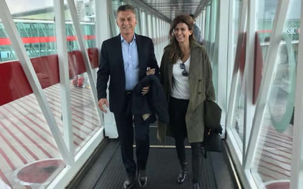

Real Chubut - Agencia de Noticias


Macri inicia agenda internacional con una gira por Rusia, Suiza y Francia

Mauricio Macri inicia la próxima semana su agenda internacional de 2018 con una gira por Rusia, Suiza y Francia, en la que mantendrá reuniones con los presidentes Vladimir Putin y Emmanuel Macron y participará en el Foro Económico de Davos, Suiza.
La Casa Rosada difundió un detalle de la agenda del viaje, según el cual Macri también se reunirá en Davos con la reina Máxima y el primer ministro de Holanda, Mark Rutte, con el primer ministro de Canadá, Justin Trudeau y con el presidente la Confederación Suiza, Alain Berset.
Destaca que Macri expondrá ante la sesión plenaria del Foro Económico en su condición de Presidente del G20, rol que por primera vez ejerce el líder de una nación suramericana.
Macri partió este domingo desde el aeropuerto internacional de Ezeiza y su arribo a Moscú- previa escala en Frankfurt, Alemania- está previsto el lunes a las 17.15 hora local (11.15 hora argentina).
La agenda del Presidente en detalle consigna que iniciará su actividad oficial en Rusia el martes a las 9 (hora de Moscú) en el hotel Ritz Carlton, con un desayuno de trabajo que compartirá con representantes de importantes empresas rusas.
Del encuentro participarán directivos de firmas como Biocad (Biotecnología), Gazprom (Energía), Gazprombank (Banco), Phosagro (Agroquímica), Rosatom (Energía Nuclear), Sinara (Inversiones), Uralkali (fertilizantes), y Vnesheconombank (Banco Desarrollo). También asistirán representantes de las compañías Lukoil (petrolera), Mail.Ru (Internet), Russian Railways (ferroviario), Vtb Bank Group (Banco), Yandex (Internet), Russian Copper Co. (cobre), Transmashholding (ferroviario) y Softline (Tecnología de la Información).
Luego, el Jefe del Estado, acompañado por la primera dama, Juliana Awada, participará de la ceremonia de inauguración de la Plaza República Argentina, situada en la calle Zhítnaya, en el distrito de Yakimanka, muy cerca de la sede de la embajada argentina en Moscú.
La Casa Rosada consignó que este hecho configura un gesto de reciprocidad por parte de las autoridades de Moscú luego de que en septiembre del año pasado la ciudad de Buenos Aires inauguró la plaza bautizada "Federación de Rusia" en el barrio de Belgrano. Agrega que el Presidente depositará luego una ofrenda floral ante el Monumento al Soldado Desconocido, dedicado a los combatientes caídos durante la Segunda Guerra Mundial, en el Jardín Alexander, frente al muro del Palacio del Kremlin, donde se hará un minuto de silencio y desfilará una guardia de honor.
Por la tarde, en el Palacio del Kremlin, se realizará la reunión entre Macri y el presidente de la Federación de Rusia, Vladimir Putin.
Por el Gobierno argentino asistirán al encuentro el canciller Jorge Faurie; el secretario de Asuntos Estratégicos, Fulvio Pompeo, y el embajador del país ante Rusia, Ricardo Lagorio.
Por Rusia participarán el canciller Serguei Lavrov, el asesor en política exterior, Yuri Ushakov y el jefe del Servicio Federal de Control Veterinario y Fitosanitario, Sergei Dankvert.
Al término del encuentro ambos mandatarios mantendrán un almuerzo de trabajo junto a sus respectivas comitivas y ofrecerán una rueda de prensa.
Finalizada la actividad oficial en la capital rusa, Macri emprenderá el viaje rumbo a la ciudad de Zürich, en Suiza. Desde allí, el miércoles por la mañana se trasladará en helicóptero hacia Davos, donde desplegará una intensa agenda de reuniones con líderes empresarios y de la sociedad civil en el marco del Foro Económico Mundial, que se desarrollará en esta villa alpina entre el 23 y el 26 de enero.
El informe oficial consigna que el primer día a las 13 hora local (9 hora argentina) Macri compartirá un almuerzo con directivos de empresas en la Casa Argentina, un espacio especialmente organizado para la ocasión, en el que el Presidente será anfitrión de diversas reuniones. A las 14 recibirá en ese mismo ámbito al empresario informático y CEO de Microsoft, Bill Gates.
Tras esa reunión se reunirá con directivos de las firmas Temasek International (inversionista); Total (petroquímico y energético); Cargill (agroquímica); Coca-Cola (alimenticia) y Lloyd's (Seguros).
A las 16 el presidente Macri se reunirá con el primer ministro de Canadá, Justin Trudeau. Más tarde, tendrá encuentros con altos ejecutivos de la red social Facebook y de la empresa Siemens.
La agenda continuará a las 17.10 en la Casa Argentina, donde el Jefe del Estado se reunirá con la reina Máxima y con el primer ministro de Holanda, Mark Rutte. Posteriormente, a las 18.15, mantendrá una audiencia con el presidente la Confederación Suiza, Alain Berset.
El jueves a partir de las 10.10 (hora de Suiza) Macri se reunirá con el fundador y director ejecutivo del Foro Económico Mundial, Klaus Schwab, y, a las 11.20, expondrá ante la sesión plenaria del Foro como Presidente del G20. Una vez concluida esta actividad, alrededor de las 12.15, el Presidente responderá preguntas en una rueda de prensa en el Media Village del Centro de Congresos de Davos.
Luego a partir de las 14.40, en la Casa Argentina en Davos, el Jefe de Estado se reunirá con directivos de las firmas Pepsico (alimenticia), Cisco Systems (telecomunicaciones) y Pan American Silver (minería).
También está prevista una reunión de Macri con autoridades de Global Citizen, la organización no gubernamental que realizó el festival social durante la cumbre del G 20 de Hamburgo, en julio de 2017. Macri participó del evento en aquella oportunidad junto al primer ministro Trudeau.
A las 17.45, partirá desde Zürich el vuelo que trasladará al Presidente y su comitiva rumbo a Paris, cuyo arribo está previsto a las 18.55 hora local (14.55 hora argentina).
La actividad oficial en París comenzará el viernes 26 de enero a las 9 (hora de Francia) en un desayuno de trabajo con directivos de compañías miembros del Movimiento de Empresas de Francia.
A las 13, almorzará con representantes de otros sectores empresarios en las oficinas del Grupo Rothschild, donde será recibido por el socio-gerente de la firma, Oliviér Pécoux.
Por la tarde, a las 18.30 locales (14.30 hora argentina) Macri se reunirá con el presidente de Francia, Emmanuel Macron, en el Palacio del Eliseo. Ambos mandatarios ofrecerán una declaración a la prensa al término del encuentro.
Por la noche Macron y la primera dama, Brigitte Macron, agasajarán con una comida de honor al Jefe del Estado argentino y a su esposa en el restaurante Monnaie de Paris.
El sábado 27 a las 11.30 hora local (7.30 hora argentina), el Presidente concluirá la actividad oficial durante una reunión con la alcaldesa de París, Ana Hidalgo, en el Hotel de Ville, sede del gobierno local, y por la noche emprenderá el retorno a Buenos Aires en un vuelo que partirá desde el aeropuerto internacional Charles de Gaulle a las 23.30.
Fuente: Ambito